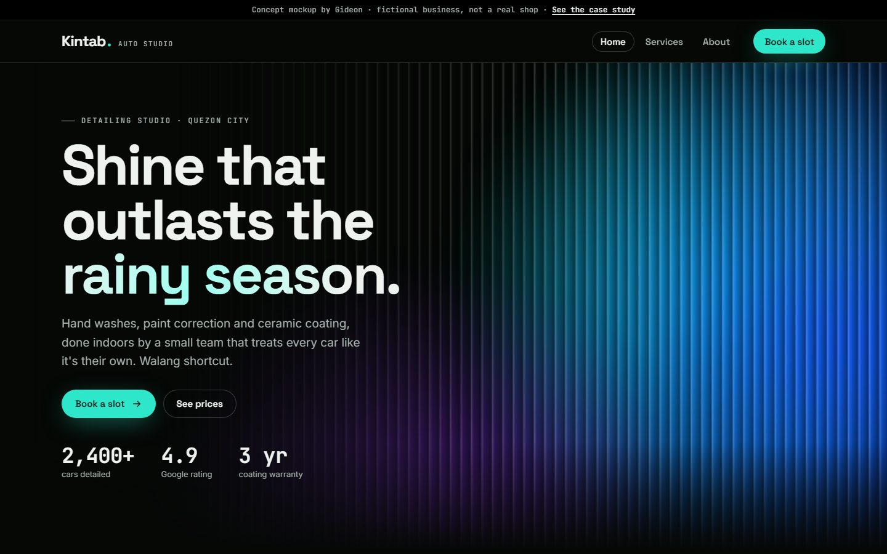
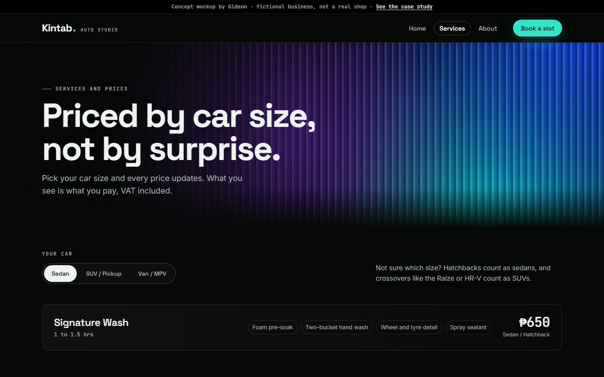
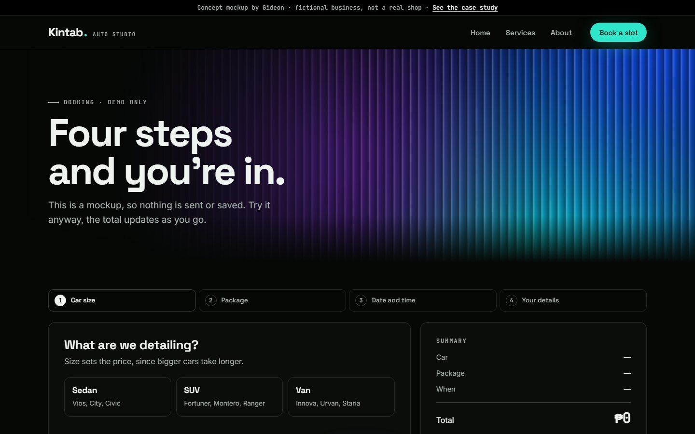
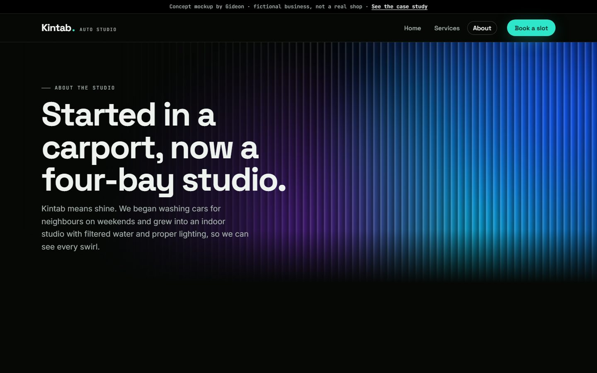

01
Home
Headline beside the fluted glass, a services teaser, a before-and-after slider and reviews.
A four-page site for a made-up car detailing studio in Quezon City. Dark, glossy, and lit through fluted glass.

Colour blobs glow under a blurred layer of vertical ribs. The ribs fade out on the text side so copy stays readable.
The before-and-after slider ends on a coated panel covered in rain beads, each one a radial highlight with a specular dot.
Electric teal goes only on the booking button and the glow behind the glass. Everything else stays void black and bone.
Headline beside the fluted glass, a services teaser, a before-and-after slider and reviews.

Wash, interior, paint correction, ceramic coating and PPF, priced in pesos by car size.

Pick a car size, a package and a slot, and the total updates as you go. Demo only, nothing is sent.

The studio, the process step by step, a drawn map and a FAQ.
Kintab Auto Studio is not a real business. Every visual is drawn with CSS and SVG, so the site loads no photos.